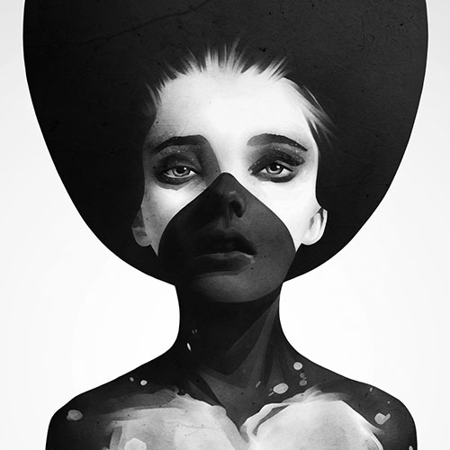
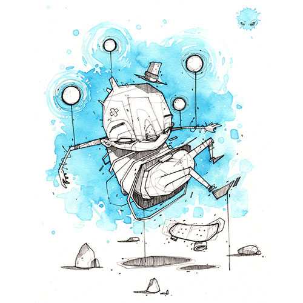
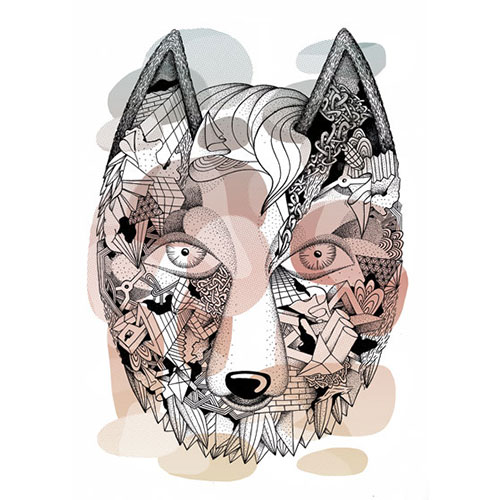

Ruben Ireland is an illustrator of strength. There is strength in the jaw-lines of his portraits, in the graphic execution of the finished product and the colours which jump out from the work. In-between the red-raw hands stroking outwards of ‘Paint or Die Trying’ and the half-man/half-ram creations of ‘Amalgamations’ sits a world of dark fairy-tales.
visit Rubens website

I'm Monsta, a french artist based in Lyon. I like watercolor, but I particularly love to mix and vary media. From brush to spray paint, through models, sculpture and sometimes 3D, whatever it takes to try to get the holly mess out of my head. My world is ambiguous, both tortured and happy, hopeless and entertaining, a sweet nightmare all in all.
visit Monstas website

KLUB7 is a collective of fine artists, based in Berlin and Halle. They have developed their early artistic footprints in the form of large-scale murals and site-specific performances in the public space, during their studies at different art universities in Berlin and Halle and gained a lot of experience by doing a big variety of art projects as a collective.
visit Klub 7s website
Quote of Banksy: "What we usually get to see as an art, is determined by only a few." But who determines what art is?
Banksy told us just a bit: In the end the price determines what art is, what has a value – and this price is only decided by a
couple of hundreds: Museum directors, curators and millionaires. Many do not know about the market and vending systems, it often seems
that highly priced art it has to be the good and worth seeing art as well.
Is art then today above all a form of financial investment?
The topic financial investment is for 99 percent of the population not interesting, after all we talk about millions of dollars!
What we focus on is a aesthetic and hedonistic approach: that one look at art with pleasure, without being having fear of contact.
It is about exciting people for art, to make art available again for the wide crowd, without pushing forward hurdles like putative
educational deficits or not payable prices.